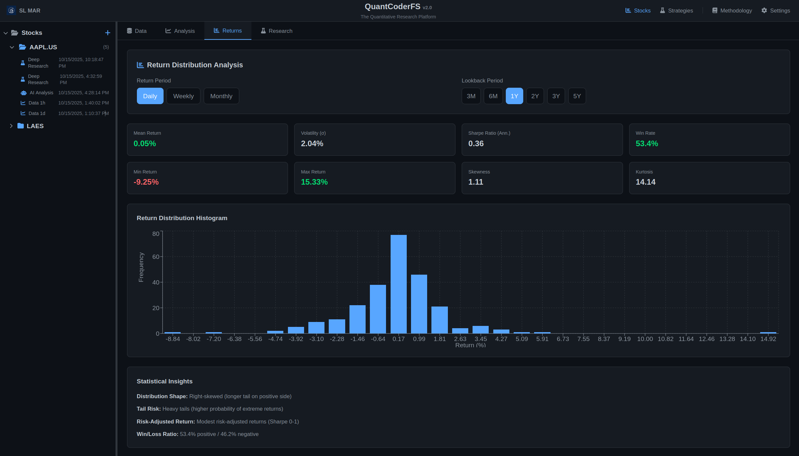

QuantCoderFS v2.0.1 Technical Documentation
Complete reference for quantitative research and algorithm development platform
Version: 2.0.1 | Status: Active Development | Updated: October 16, 2025
What is QuantCoderFS?
QuantCoderFS is a unified quantitative research platform that combines two distinct modules:
1. Market Intelligence Module
- Purpose: Multi-agent equity research inspired by MarketSense AI (Fatouros et al., 2024)
- Input: Stock tickers (e.g., AAPL.US, TSLA.US)
- Output: BUY/HOLD/SELL trading signals with conviction scores (1-10)
- Technology: Custom multi-agent system with 4 specialized agents + 1 orchestrator
2. Strategy Generator Module
- Purpose: Automated trading algorithm generation from academic research papers
- Input: PDF research papers
- Output: Production-ready QuantConnect algorithm code (Python)
- Technology: CrewAI multi-agent workflow with PDF extraction and code generation
Core Technology Stack
| Layer | Technology | Version |
|---|---|---|
| Backend Framework | FastAPI | 0.115.12 |
| Frontend Framework | Next.js (React 19) | 15.3.2 |
| Database | SQLite / PostgreSQL | SQLAlchemy 2.0.41 |
| AI Framework (Strategies) | CrewAI | Latest |
| AI Framework (Signals) | Custom Multi-Agent | Inspired by MarketSense AI |
| Code Editor | Monaco Editor | 4.7.0 |
| Charts | Lightweight Charts | 4.2.3 |
System Architecture
High-Level Architecture
┌─────────────────────────────────────────────────────────────┐
│ Frontend (Next.js 15) │
│ ┌──────────────┐ ┌──────────────┐ ┌──────────────┐ │
│ │ Stocks │ │ Strategies │ │ Settings │ │
│ │ (Research) │ │ (Code Gen) │ │ │ │
│ └──────────────┘ └──────────────┘ └──────────────┘ │
└──────────────────────────┬──────────────────────────────────┘
│ HTTP/REST API
┌──────────────────────────┴──────────────────────────────────┐
│ Backend (FastAPI + Python) │
│ ┌─────────────────────┐ ┌─────────────────────┐ │
│ │ Market Intelligence │ │ Strategy Generator │ │
│ │ • Stock Handler │ │ • PDF Extraction │ │
│ │ • Signal Agents │ │ • Code Generation │ │
│ │ • Data Aggregation │ │ • QC Integration │ │
│ └─────────────────────┘ └─────────────────────┘ │
│ │
│ ┌──────────────────────────────────────────────────────┐ │
│ │ SQLite/PostgreSQL Database │ │
│ └──────────────────────────────────────────────────────┘ │
└──────────────────────────┬──────────────────────────────────┘
│
┌──────────────────┼──────────────────┐
│ │ │
┌────▼─────┐ ┌──────▼──────┐ ┌──────▼──────────┐
│ EODHD │ │ OpenAI/ │ │ QuantConnect │
│ API │ │ Anthropic │ │ REST API │
└──────────┘ └─────────────┘ └────────────────┘Module Structure
Backend Directory Structure:
backend/
├── market_intelligence/ # Market Intelligence Module
│ ├── agents/ # Multi-agent system (5 agents)
│ ├── api/routers/ # REST API endpoints
│ ├── core/ # Business logic
│ └── db/ # Database models & migrations
├── strategy_generator/ # Strategy Generator Module
│ ├── agents/ # CrewAI agents
│ ├── routers/ # REST API endpoints
│ └── tools/ # CrewAI tools
├── shared/ # Shared utilities
└── main.py # FastAPI app entry pointDependencies & Third-Party Services
Backend Dependencies
| Package | Version | Purpose |
|---|---|---|
| fastapi | 0.115.12 | REST API framework |
| uvicorn | 0.34.2 | ASGI server |
| sqlalchemy | 2.0.41 | ORM for database |
| pydantic | 2.11.5 | Data validation |
| crewai | Latest | Multi-agent workflows (strategies) |
| openai | Latest | OpenAI API client |
| anthropic | Latest | Anthropic Claude API client |
Required Third-Party Services
The following services require API keys configured in Settings:
1. EODHD API (Market Data Provider)
- Purpose: Stock EOD prices, fundamentals, financial news
- Endpoint:
https://eodhd.com/api/ - Authentication: API key
- Free Tier: 20 API calls/day, 1 year historical data, 500 welcome bonus calls
- Paid Plans: From €19.99/month (100,000 calls/day, 30+ years historical data)
- Usage: Market Intelligence module
2. OpenAI API (Primary LLM Provider)
- Purpose: AI-powered signal generation and code generation
- Models Used: GPT-4, GPT-3.5-turbo
- Authentication: API key (sk-...)
- Cost: ~$0.03 per 1K tokens (GPT-4)
- Usage: Both modules (signals + strategy generation)
Optional Third-Party Services
3. Anthropic Claude API (Alternative LLM)
- Purpose: Alternative LLM provider
- Models: Claude 3 Opus, Claude 3 Sonnet
- Usage: Signal generation (user selectable)
- Cost: ~$0.015 per 1K tokens
4. Ollama (Local LLM) - PLANNED
- Status: Not yet implemented
- Purpose: Local LLM inference (no API costs)
- Models: llama2, mixtral, etc.
- Authentication: None (local)
- Cost: Free (requires local GPU)
- Planned Usage: Market Intelligence signals only (user selectable)
5. Tavily API (Web Search)
- Purpose: Macro environment research
- Usage: Macro agent in Market Intelligence
- Cost: Free tier available
6. QuantConnect API (Trading Platform)
- Purpose: Deploy algorithms for backtesting/live trading
- Endpoint:
https://www.quantconnect.com/api/v2/ - Authentication: User ID + API Token
- Cost: Free tier available, paid for live trading
Price Normalization
Understanding adjusted vs. raw prices for accurate analysis
Price normalization is the first and most critical setting to understand. Incorrect settings will produce misleading charts, incorrect performance metrics, and invalid portfolio analysis.
The Problem: Corporate Events Create Data Discontinuities
Stock splits and dividends create discontinuities in historical price data that make charts and calculations misleading without proper adjustment.
Example: NVDA 10-for-1 Stock Split (June 10, 2024)
Without Normalization (Raw Prices):
June 7, 2024: Close = $1,208.88
June 10, 2024: Close = $121.79 ← Appears as -90% crash!With Normalization (Adjusted Prices):
June 7, 2024: Adjusted Close = $120.84
June 10, 2024: Adjusted Close = $121.74 ← Smooth transition (+0.7%)The split was not a loss of value - shareholders received 10 shares for every 1 share they owned. But raw price data shows a misleading 90% drop.
How Price Normalization Works
QuantCoderFS uses EODHD API, which provides two price fields:
close- Raw closing price as actually tradedadjusted_close- Price adjusted backward for all corporate events
EODHD adjusts historical prices backward from the present:
Before Split (historical):
Raw price: $1,208.88
Adjusted: $120.84 (divided by split ratio 10:1)
After Split (current):
Raw price: $121.79
Adjusted: $121.74 (minimal difference)This creates a continuous, meaningful price series for analysis.
Setting the Normalization Mode
Navigate to Parameters → Price Normalization section.
Parameters page showing Price Normalization toggle between Adjusted and Raw prices
Options:
- Uses
adjusted_closefield from EODHD - Accounts for stock splits, reverse splits, and dividends
- Creates smooth, continuous price curves
- Enables accurate performance comparisons
- Required for meaningful portfolio analysis
- Uses raw
closefield from EODHD - Shows actual traded prices
- Will show gaps/jumps at corporate events
- Use only if you specifically need unadjusted data
- NOT recommended for performance analysis
Impact Across the Platform
The normalization setting is global and affects every feature that uses price data:
- Portfolio Analysis: Equal-weight, MVO, Min Variance, Black-Litterman optimization, all equity curves
- Risk Analysis: Monte Carlo simulations (all 1000+ paths), VaR/CVaR calculations, volatility measurements
- Pair Trading: Price series for both stocks, spread calculations, z-score analysis, backtest results
- Peer Comparison: Normalized performance charts, relative performance metrics, correlation analysis
When to Use Each Mode
| Use Case | Adjusted Prices | Raw Prices |
|---|---|---|
| Portfolio analysis | ✅ Yes | ❌ No |
| Risk metrics (VaR, volatility) | ✅ Yes | ❌ No |
| Peer comparison | ✅ Yes | ❌ No |
| Shows corporate event gaps | ❌ No | ✅ Yes |
| Matches broker statements | ❌ No | ✅ Yes |
Recommendation: Use Adjusted Prices (99% of cases). This is the industry standard for quantitative analysis.
Corporate Events Display
Visual markers for stock splits and dividends on charts
Overview
When using adjusted prices, QuantCoderFS automatically displays corporate events (stock splits, reverse splits) as visual markers on all charts.
Corporate events are fetched automatically from EODHD API and displayed only when using adjusted prices. Events are hidden when using raw prices to avoid confusion.
Visual Representation
- Vertical dashed lines in orange (#d29922) mark the exact date of corporate events
- Labels show format:
TICKER: SPLIT_RATIO(e.g., "NVDA: 10/1") - Labels positioned at the top of the line for clarity
- Works on all chart types: Portfolio Analysis (Chart.js) and Peer Comparison (Recharts)

Portfolio equity curve visualization showing optimized portfolio performance over time
Peer comparison showing normalized performance across sector competitors
Note: Corporate event markers (vertical orange dashed lines) appear automatically on charts when analyzing stocks that experienced splits or dividends during the selected time period. The markers are only visible when using adjusted prices mode.
Supported Events
| Event Type | Display Format | Example |
|---|---|---|
| Stock Split | TICKER: X/1 | NVDA: 10/1 |
| Reverse Split | TICKER: 1/X | TSLA: 1/3 |
| Dividends | Not currently displayed | - |
Where Events Appear
- Portfolio Analysis: Equal-weight, MVO, Min Variance, Black-Litterman equity curves
- Risk Analysis: Monte Carlo simulation charts (all scenarios)
- Peer Comparison: Normalized performance charts with sector peers
Recent Notable Splits
Events tracked by QuantCoderFS (last 5 years):
- NVDA: 2024-06-10 (10:1 split)
- TSLA: 2022-08-25 (3:1 split)
- GOOGL: 2022-07-18 (20:1 split)
- AAPL: 2020-08-31 (4:1 split)
- AMZN: 2022-06-06 (20:1 split)
Technical Implementation
Data Source: EODHD Splits API
GET https://eodhd.com/api/splits/{ticker}
Parameters:
- api_token: Your EODHD API key
- from: Start date (YYYY-MM-DD)
- to: End date (YYYY-MM-DD)
- fmt: json
Response: CSV format
Date,"Stock Splits"
2024-06-10,10.000000/1.000000Backend Module: market_intelligence/core/corporate_events.py
Frontend Integration:
- Chart.js: Uses
chartjs-plugin-annotationfor vertical line annotations - Recharts: Uses
<ReferenceLine>component with custom labels
Corporate event markers only appear when using adjusted prices. If you switch to raw prices, the markers disappear to prevent confusion with the actual price gaps.
API Overview
Core Functionality
QuantCoderFS provides a RESTful API for two main workflows:
All market data is sourced from EODHD Financial APIs. This includes end-of-day stock prices, fundamental data (financial statements, ratios), and company news. An active EODHD subscription is required.
From this data, QuantCoderFS generates AI-powered trading signals using a multi-agent system that analyzes fundamentals, news sentiment, price dynamics, and macroeconomic conditions.
Module 1: Market Intelligence API
Automated equity research and signal generation using EODHD market data.
API Endpoints Overview
| Category | Endpoint | Method | Description |
|---|---|---|---|
| Stocks | /api/stocks/create | POST | Create stock snapshot |
| /api/stocks/tickers | GET | List all tickers | |
| /api/stocks/{ticker}/snapshots | GET | List snapshots | |
| /api/stocks/{ticker}/snapshots/{id} | GET | Load snapshot | |
| /api/stocks/refresh | POST | Refresh data | |
| /api/stocks/{ticker}/files/* | GET | Download files | |
| Signals | /api/signals/generate/{project_id} | POST | Generate signal |
| /api/signals/snapshot/{ticker}/{id} | GET | Get snapshot signal | |
| /api/signals/history/{ticker} | GET | Signal history | |
| /api/signals/latest | GET | Latest signals | |
| Returns | /api/stocks/{ticker}/snapshots/{id}/returns | GET | Calculate return statistics |
| Benchmark | /api/stocks/{ticker}/snapshots/{id}/benchmark | GET | Compare vs market benchmark |
| Research | /api/stocks/{ticker}/snapshots/{id}/research/generate | POST | Generate report |
| /api/stocks/{ticker}/snapshots/{id}/research/files | GET | List reports | |
| /api/stocks/{ticker}/snapshots/{id}/research/content/{file} | GET | Get report content | |
| Settings | /api/settings | GET/POST | Manage API keys |
| /api/settings/quantconnect | GET/POST/DELETE | QC credentials | |
| /api/settings/quantconnect/test | POST | Test connection |
Module 2: Strategy Generator API
Automated QuantConnect algorithm generation from academic papers.
| Endpoint | Method | Purpose |
|---|---|---|
/api/papers/upload |
POST | Upload research paper (PDF) |
/api/papers/list |
GET | List uploaded papers |
/api/strategy/generate |
POST | Generate QuantConnect algorithm from paper |
/api/backtest/trigger-backtest |
POST | Deploy algorithm to QuantConnect |
Snapshot Architecture
QuantCoderFS v2.0 introduced a snapshot-based architecture for stock data management:
Key Concepts
- Snapshot ID: Timestamp in format
YYYYMMDD_HHMMSS(e.g.,20251016_143022) - Multiple Snapshots: Each ticker can have multiple snapshots taken at different times
- Immutable Data: Once created, snapshot data doesn't change (refresh creates new snapshot)
- File Storage: All data stored in
/stocks/{ticker}/{snapshot_id}/directory - Independent Analysis: Each snapshot has its own signals and research reports
Benefits
- Track how market conditions evolve over time
- Compare signals generated on different dates
- Reproducible analysis - same snapshot always yields same signal
- Easy cleanup - delete old snapshots without affecting recent data
See the Stocks API documentation for detailed snapshot management endpoints.
Detailed API Documentation
- Stocks API - Complete reference for stock data management
- Signals API - Complete reference for signal generation
- Settings API - Manage API keys and credentials
- Research API - Generate comprehensive research reports
- Strategies API - Algorithm generation endpoints
- Backtest API - QuantConnect deployment
Market Intelligence Module
Purpose
Multi-agent equity research system inspired by MarketSense AI paper (Fatouros et al., 2024).
Screenshots
Stock Analysis with Benchmarks
Stock data view with price chart, fundamentals, and benchmark comparison (SPY, QQQ, DIA, IWM). This is the first view you see when analyzing a stock - FinViz-like visualization with comprehensive market data.
Return Distribution Analysis
Statistical analysis of historical return distributions with interactive histogram visualization (daily/weekly/monthly returns, Sharpe ratio, win rate).
Peer Comparison
Peer comparison: normalized performance across sector competitors with correlation and beta metrics.
Portfolio Optimization
Portfolio optimization: equal-weight vs. max Sharpe with equity curves and composition breakdown.
Onboarding Wizard
Onboarding wizard: 6-step setup for license, API keys, and QuantConnect integration.
API Keys Setup
API keys setup: EODHD, OpenAI (required), Tavily (optional for deep research).
QuantConnect Integration
QuantConnect integration: User ID, API Token, Organization ID for strategy deployment.
Settings Page
Settings page: License activation, API credentials, and AI model configuration.
Returns Tab - Statistical Return Analysis
Comprehensive statistical analysis of historical return distributions with interactive histogram visualization.
Return Calculation:
Supported Periods: Daily, Weekly (Friday close), Monthly (month-end)
Lookback Options: 3M, 6M, 1Y, 2Y, 3Y, 5Y
Key Statistics Displayed:
- Mean Return: Average return over the period (positive = upward trend)
- Volatility (σ): Standard deviation of returns (higher = more risk)
- Sharpe Ratio (Annualized): Risk-adjusted return metric
Formula: Sharpe = (Mean / StdDev) × √periods_per_year
Interpretation: >1 = good, 0-1 = modest, <0 = poor risk-adjusted returns - Skewness: Distribution asymmetry
Positive = right tail longer (large gains more likely)
Negative = left tail longer (large losses more likely) - Kurtosis: Tail heaviness (values >3 = heavy tails, higher extreme return probability)
- Win Rate: Percentage of periods with positive returns
- Min/Max Returns: Extreme value ranges
Histogram Visualization:
30-bin frequency distribution revealing:
- Return clustering patterns (most common return ranges)
- Distribution shape (symmetric, skewed, or multi-modal)
- Tail behavior (frequency of extreme gains/losses)
- Deviation from normal distribution assumptions
Example Interpretation:
Daily Analysis: Mean 0.5%, σ 2.1%, Sharpe 1.5, Skewness -0.3, Kurtosis 4.2, Win Rate 55%
- ✓ Positive average daily return (upward trend)
- ✓ Good risk-adjusted returns (Sharpe >1)
- ⚠ Left-skewed (downside tail longer — larger losses more likely)
- ⚠ Heavy tails (elevated risk of extreme moves)
- ✓ 55% of days positive (slight edge)
Benchmark Tab - Market Comparison
Compare stock performance against market benchmarks (SPY, QQQ, DIA, IWM) with Alpha, Beta, correlation metrics, and Up/Down capture ratios.
Key Metrics Calculated:
- Alpha (Annualized): Excess return compared to benchmark
Alpha = Mean(Stock Return - Benchmark Return) × 252Positive alpha indicates outperformance; negative indicates underperformance.
- Beta: Systematic risk relative to benchmark
Beta = Cov(Stock, Benchmark) / Var(Benchmark)Beta > 1: More volatile; Beta < 1: Less volatile; Beta ≈ 1: Similar volatility
- Correlation: Degree of linear relationship with benchmark
Correlation = Pearson(Stock Returns, Benchmark Returns)Range: -1 to +1. High correlation (>0.8): Moves with market; Low correlation (<0.5): Independent behavior
- Tracking Error (Annualized): Deviation from benchmark
Tracking Error = StdDev(Excess Returns) × √252Higher tracking error indicates more independent performance from benchmark.
- Information Ratio: Risk-adjusted alpha
IR = Alpha / Tracking ErrorIR > 0.5: Good risk-adjusted outperformance; IR < 0: Underperformance
- Up Capture Ratio: Performance on benchmark's up days
Up Capture = [Mean(Stock Returns | Benchmark > 0) / Mean(Benchmark Returns | Benchmark > 0)] × 100Up Capture > 100%: Outperforms on up days; <100%: Underperforms on up days
- Down Capture Ratio: Performance on benchmark's down days
Down Capture = [Mean(Stock Returns | Benchmark < 0) / Mean(Benchmark Returns | Benchmark < 0)] × 100Down Capture < 100%: Protects on down days (good); >100%: Amplifies losses (bad)
- Sharpe Ratios: Risk-adjusted returns for both stock and benchmark
Sharpe = (Mean Return / StdDev) × √252Compare Sharpe ratios to see which asset has better risk-adjusted returns.
Normalized Performance Chart:
Both stock and benchmark prices are normalized to start at 100 to visualize relative performance over time. The stock line is solid, the benchmark line is dashed.
Stock: AAPL | Benchmark: SPY | Period: 12 months
- ✓ Alpha = +5.2% (outperformed S&P 500 by 5.2% annualized)
- ✓ Beta = 1.15 (15% more volatile than market)
- ✓ Correlation = 0.82 (high correlation - moves with market)
- ✓ Information Ratio = 0.68 (good risk-adjusted outperformance)
- ✓ Up Capture = 112% (captures 12% more gains on up days)
- ✓ Down Capture = 95% (protects 5% better on down days)
- ✓ Tracking Error = 7.6% (moderate deviation from benchmark)
- ✓ Sharpe (AAPL) = 1.2 vs Sharpe (SPY) = 0.9 (better risk-adjusted returns)
Peers Tab - Sector Comparison
Compare performance against sector peers with normalized price charts showing relative outperformance/underperformance.
Agent Architecture
The system uses 5 specialized agents working in orchestration:
1. Fundamentals Summarizer Agent (30% weight)
- Input: Quarterly financial statements, company highlights
- Processing: Financial health score, revenue growth, profit margins
- Output: Summary (100-200 words) + Score (0-100)
2. Progressive News Summarizer Agent (25% weight)
- Input: 60-day rolling news articles
- Processing: Sentiment aggregation, narrative themes
- Output: Summary + Sentiment score (0-100)
3. Stock-Price Dynamics Summarizer Agent (25% weight)
- Input: OHLCV price data (1 year), S&P 500 benchmark
- Processing: Technical analysis (MA, RSI, MACD), volatility
- Output: Summary + Technical score (0-100)
4. Macroeconomic Environment Summarizer Agent (20% weight)
- Input: Sector information, web search results (via Tavily)
- Processing: Sector analysis, economic cycle assessment
- Output: Summary + Macro score (0-100)
5. Signal Generation Agent (Master Orchestrator)
- Input: Outputs from all 4 summarizer agents
- Processing: Chain-of-Thought reasoning, weighted consensus
- Output: Final BUY/HOLD/SELL signal with conviction (1-10) and confidence (0.0-1.0)
Signal Calculation Formula
weighted_score = (
fundamentals_score * 0.30 +
news_score * 0.25 +
price_dynamics_score * 0.25 +
macro_score * 0.20
)
if weighted_score >= 70:
signal = "BUY"
elif weighted_score <= 40:
signal = "SELL"
else:
signal = "HOLD"The original MarketSense AI paper (Fatouros et al., 2024) reported the following results from academic testing on S&P 100 stocks over 15 months:
- Excess alpha: 10-30%
- Cumulative return: Up to 72%
- Multi-agent consensus outperformed individual agents significantly
Note: These are research results from the original paper. QuantCoderFS is inspired by this framework but is not identical to the research implementation.
Data Flow
- User creates stock project (
POST /api/stocks/create) - System fetches data from EODHD API (EOD prices, fundamentals, news)
- Data stored in file system:
user_workdir/stocks/{ticker}_{timestamp}/ - User generates signal (
POST /api/signals/generate/{project_id}) - Signal Orchestrator runs agents in sequence (60-90 seconds)
- Results saved to database + file system
- Frontend displays signal with agent breakdowns
Agent Console
Purpose
Real-time WebSocket-based logging console for transparent AI agent execution monitoring.
Screenshot
Agent Console: real-time WebSocket logging showing AI agent execution with color-coded status indicators.
Features
- Real-Time Logging: WebSocket connection displays agent activities as they execute
- Color-Coded Status: Visual indicators for info (blue), progress (yellow), success (green), error (red)
- Agent Filtering: Filter logs by agent type (All, Fundamentals, News, Price, Macro)
- Export Capability: Download complete log history as text file for auditability
- Auto-Scroll: Automatically scrolls to latest logs with minimize/expand controls
WebSocket Endpoint
ws://localhost:8000/ws/agent-logsMessage Format
{
"agent": "Fundamentals Agent",
"action": "Starting analysis",
"details": "Ticker: AAPL",
"status": "progress",
"timestamp": "2025-10-17T12:00:00.000Z"
}Agent Execution Flow Example
- MarketSense Orchestrator → Starting multi-agent analysis (info)
- Fundamentals Agent → Fetching fundamentals (progress)
- Fundamentals Agent → Analysis complete - Score: 75/100 (success)
- News Agent → Analyzing sentiment (progress)
- News Agent → Analysis complete - Score: 80/100 (success)
- Price Dynamics Agent → Analyzing momentum (progress)
- Price Dynamics Agent → Analysis complete - Score: 70/100 (success)
- Macro Agent → Analyzing market environment (progress)
- Macro Agent → Analysis complete - Score: 65/100 (success)
- Signal Agent → Integrating agent outputs (progress)
- Signal Agent → Signal generated - BUY (Conviction: 80, Confidence: 84) (success)
Portfolio Optimization
Purpose
Multi-stock portfolio construction with Modern Portfolio Theory optimization algorithms and comprehensive risk analysis.
Screenshot
Risk analysis: Monte Carlo simulation (1,000 scenarios) and Value at Risk (VaR) metrics for portfolio management.
Optimization Algorithms
- Mean-Variance Optimization (MVO): Maximizes Sharpe ratio for optimal risk-adjusted returns
- Black-Litterman Model: Bayesian approach incorporating investor views with market equilibrium
- Minimum Variance Portfolio: Minimizes portfolio volatility for conservative risk management
Risk Analysis Tools
- Monte Carlo Simulation: 1,000-10,000 scenarios over configurable time horizon (252 trading days default)
- Value at Risk (VaR): Historical and Parametric VaR at 95% confidence level
- Conditional VaR (CVaR): Expected loss beyond VaR threshold
- Stress Testing: Portfolio performance under extreme market conditions
Monte Carlo Output Metrics
- Mean Final Value
- Median (50th percentile)
- Standard Deviation
- Min/Max scenarios
- 5th and 95th Percentile ranges
Workflow
- Create empty portfolio with drag-and-drop interface
- Add stocks from Stocks section
- Select optimization algorithm (MVO, Black-Litterman, Min Variance)
- System calculates optimal weights based on historical returns and covariance
- View allocation pie chart, expected return, volatility, Sharpe ratio
- Run Monte Carlo simulation for risk analysis
- Calculate VaR and CVaR for downside risk assessment
Pair Trading
Purpose
Statistical arbitrage through cointegration analysis of stock pairs for mean-reversion trading strategies.
Screenshot
Pair trading analysis: cointegration test, z-score time series, and dual-axis price comparison for EGAN.US / LAES.US.
Statistical Methods
- Engle-Granger Cointegration Test: Tests for long-term equilibrium relationship (p-value < 0.05 indicates cointegration)
- Augmented Dickey-Fuller (ADF): Stationarity test for spread time series
- Ordinary Least Squares (OLS): Hedge ratio estimation for optimal position sizing
- Half-Life Calculation: Mean-reversion speed using Ornstein-Uhlenbeck process
Key Metrics
| Metric | Description | Interpretation |
|---|---|---|
| p-value | Cointegration test significance | < 0.05 = Cointegrated (statistically significant) |
| Hedge Ratio | Optimal ratio for position sizing | e.g., 1.69 means 1.69 shares of Stock 2 per 1 share of Stock 1 |
| Half-Life | Mean-reversion speed (days) | Lower = faster mean-reversion (ideal: 5-30 days) |
| Z-Score | Current spread deviation | < -2.0 = LONG, > 2.0 = SHORT, -2.0 to 2.0 = NEUTRAL |
| Win Rate | Historical success rate | Percentage of profitable trades (> 60% preferred) |
Trading Signals
- LONG: Z-score < -2.0 (spread undervalued → buy Stock 1, sell Stock 2)
- SHORT: Z-score > 2.0 (spread overvalued → sell Stock 1, buy Stock 2)
- NEUTRAL: -2.0 ≤ Z-score ≤ 2.0 (no position or close existing)
Workflow
- Create empty pair with auto-generated name
- Drag and drop Stock 1 from Stocks section to Ticker 1 slot
- Drag and drop Stock 2 to Ticker 2 slot
- System automatically fetches 2 years of historical data
- Runs Engle-Granger cointegration test (10-20 seconds)
- Calculates hedge ratio, half-life, current z-score
- Generates trading signal based on z-score thresholds
- Displays z-score time series chart and dual-axis price comparison
- Shows historical performance metrics (win rate, avg profit, avg duration)
Benchmarks
Purpose
Market index tracking and relative performance comparison for portfolio and stock analysis.
Supported Indices
| Ticker | Name | Description |
|---|---|---|
| SPY | S&P 500 ETF | Large-cap US equities (500 stocks) |
| QQQ | Nasdaq 100 ETF | Technology-heavy large-cap (100 stocks) |
| DIA | Dow Jones Industrial Average ETF | Blue-chip US equities (30 stocks) |
| IWM | Russell 2000 ETF | Small-cap US equities (2000 stocks) |
Comparison Metrics
- Alpha (Annualized): Excess return compared to benchmark
- Beta: Systematic risk relative to benchmark (1.0 = same volatility)
- Correlation: Degree of linear relationship (-1 to 1)
- Tracking Error: Standard deviation of return differences (annualized)
- Up Capture Ratio: Performance on benchmark's up days (> 100% = outperformance)
- Down Capture Ratio: Performance on benchmark's down days (< 100% = less downside)
- Sharpe Ratios: Risk-adjusted returns for both stock and benchmark
Data Management
- Auto-Sync: Daily EOD data updates via cron job or manual trigger
- Data Caching: Efficient storage with last-update tracking
- Historical Range: 2+ years of daily OHLCV data
Strategy Generator Module
Purpose
Automated QuantConnect algorithm generation from academic research papers using CrewAI.
Screenshot
Strategy Generator - Paper to Code
Upload academic research papers (left panel) and generate complete QuantConnect algorithm code (right panel) using CrewAI multi-agent workflow. Monaco editor with Python syntax highlighting and line numbers.
CrewAI Workflow
Crew 1: Paper Extraction
- Agent: Paper Analyzer Agent
- Role: Extract strategy from research paper
- Tool: PDFAnalyserTool (PDF parsing)
- Output: Structured strategy summary (JSON)
Crew 2: Code Generation
- Agent 1: Strategy Summarizer (condense paper into trading rules)
- Agent 2: Code Generator (write QuantConnect algorithm)
- Agent 3: Code Validator (review and fix code issues)
- Output: Complete QuantConnect
.pyalgorithm file
QuantConnect Integration
Endpoint: POST /api/backtest/trigger-backtest
Workflow:
- Get QC credentials from database
- Create QC project via REST API
- Upload algorithm code to project
- Compile code
- Wait for compilation
- Create backtest
- Return backtest ID and project URL
Request Example:
{
"code": "# QuantConnect algorithm code",
"project_name": "My Momentum Strategy"
}Response Example:
{
"status": "success",
"project_id": 12345678,
"backtest_id": "abc123",
"project_url": "https://www.quantconnect.com/project/12345678"
}Strategies API Reference
Upload PDF Paper
POST /api/papers/upload
Content-Type: multipart/form-data
file: (binary PDF data)
Response 200:
{
"filename": "momentum_strategy.pdf",
"size": 1024000,
"path": "/path/to/papers/momentum_strategy.pdf"
}List Papers
GET /api/papers/list
Response 200:
[
{
"filename": "momentum_strategy.pdf",
"size_kb": 1000,
"uploaded": "2025-10-14T10:00:00"
}
]Generate Code from Paper
POST /api/papers/generate-code/momentum_strategy.pdf
Response 200:
{
"filename": "momentum_strategy.py",
"code": "# region imports\nfrom AlgorithmImports import *\n...",
"summary": "Strategy extracted from paper"
}List Generated Code
GET /api/papers/list?folder=codes
Response 200:
[
{
"filename": "momentum_strategy.py",
"size_kb": 15,
"generated": "2025-10-14T10:30:00"
}
]Backtest API Reference
Push to QuantConnect
POST /api/backtest/trigger-backtest
Content-Type: application/json
{
"code": "# Algorithm code here",
"project_name": "My Momentum Strategy"
}
Response 200:
{
"status": "success",
"project_id": 12345678,
"backtest_id": "abc123def456",
"project_url": "https://www.quantconnect.com/project/12345678"
}You must configure QuantConnect User ID and API Token in Settings before using this endpoint.
Portfolios API Reference
Create Portfolio
POST /api/portfolios
Content-Type: application/json
{
"name": "Tech Portfolio"
}
Response 200:
{
"id": 1,
"name": "Tech Portfolio",
"created_at": "2025-10-17T12:00:00Z"
}List Portfolios
GET /api/portfolios
Response 200:
{
"portfolios": [
{
"id": 1,
"name": "Tech Portfolio",
"stock_count": 5,
"created_at": "2025-10-17T12:00:00Z"
}
]
}Get Portfolio
GET /api/portfolios/{portfolio_id}
Response 200:
{
"id": 1,
"name": "Tech Portfolio",
"stocks": [
{"ticker": "AAPL", "weight": 0.25},
{"ticker": "MSFT", "weight": 0.25},
{"ticker": "GOOGL", "weight": 0.25},
{"ticker": "AMZN", "weight": 0.25}
],
"created_at": "2025-10-17T12:00:00Z",
"updated_at": "2025-10-17T12:30:00Z"
}Update Portfolio (Rename)
PATCH /api/portfolios/{portfolio_id}
Content-Type: application/json
{
"name": "New Portfolio Name"
}
Response 200:
{
"id": 1,
"name": "New Portfolio Name",
"updated_at": "2025-10-17T12:30:00Z"
}Add Stock to Portfolio
POST /api/portfolios/{portfolio_id}/stocks
Content-Type: application/json
{
"ticker": "GOOGL"
}
Response 200:
{
"message": "Stock added successfully",
"portfolio_id": 1,
"ticker": "GOOGL"
}Remove Stock from Portfolio
DELETE /api/portfolios/{portfolio_id}/stocks/{ticker}
Response 200:
{
"message": "Stock removed successfully"
}Optimize Portfolio
POST /api/portfolios/{portfolio_id}/optimize
Content-Type: application/json
{
"algorithm": "mvo",
"risk_free_rate": 0.02,
"target_return": 0.15
}
Response 200:
{
"algorithm": "mvo",
"optimal_weights": {
"AAPL": 0.30,
"MSFT": 0.25,
"GOOGL": 0.25,
"AMZN": 0.20
},
"expected_return": 0.15,
"volatility": 0.18,
"sharpe_ratio": 0.72
}Monte Carlo Simulation
POST /api/portfolios/{portfolio_id}/monte-carlo
Content-Type: application/json
{
"num_simulations": 1000,
"time_horizon_days": 252
}
Response 200:
{
"num_simulations": 1000,
"mean_return": 0.12,
"median_return": 0.11,
"std_dev": 0.18,
"percentiles": {
"5": -0.25,
"25": 0.05,
"50": 0.11,
"75": 0.20,
"95": 0.45
},
"probability_positive": 0.68
}Calculate VaR
POST /api/portfolios/{portfolio_id}/var
Content-Type: application/json
{
"confidence_level": 0.95,
"time_horizon_days": 1
}
Response 200:
{
"var_95": -0.025,
"cvar_95": -0.035,
"confidence_level": 0.95,
"interpretation": "With 95% confidence, maximum 1-day loss is 2.5%"
}Portfolio endpoints require Substack subscriber tier license.
Pairs API Reference
Create Pair
POST /api/pairs
Content-Type: application/json
{
"name": "Tech Pair",
"ticker1": "AAPL", // Optional
"ticker2": "MSFT" // Optional
}
Response 200:
{
"id": 1,
"name": "Tech Pair",
"ticker1": null,
"ticker2": null,
"created_at": "2025-10-17T12:00:00Z"
}List Pairs
GET /api/pairs
Response 200:
{
"pairs": [
{
"id": 1,
"name": "AAPL / MSFT",
"ticker1": "AAPL",
"ticker2": "MSFT",
"is_cointegrated": true,
"last_signal": "LONG",
"created_at": "2025-10-17T12:00:00Z"
}
]
}Get Pair Analysis
GET /api/pairs/{pair_id}
Response 200 (Complete Pair):
{
"pair": {
"id": 1,
"name": "AAPL / MSFT",
"ticker1": "AAPL",
"ticker2": "MSFT"
},
"cointegration": {
"is_cointegrated": true,
"p_value": 0.02,
"hedge_ratio": 1.25,
"half_life": 15.5
},
"current_status": {
"z_score": -2.5,
"signal": "LONG",
"signal_date": "2025-10-17T12:00:00Z"
},
"historical_performance": {
"win_rate": 0.65,
"avg_profit_per_trade": 0.03,
"avg_trade_duration": 12.5
},
"charts": {
"z_scores": [...],
"prices": [...]
}
}
Response 200 (Incomplete Pair):
{
"pair": {
"id": 1,
"name": "New Pair 2025-10-17 12:00:00",
"ticker1": null,
"ticker2": null
},
"incomplete": true,
"message": "Add both tickers to run analysis"
}Add Ticker to Pair
POST /api/pairs/{pair_id}/tickers
Content-Type: application/json
{
"ticker": "AAPL",
"position": 1 // 1 or 2
}
Response 200:
{
"id": 1,
"name": "AAPL / ...",
"ticker1": "AAPL",
"ticker2": null,
"message": "Ticker added. Analysis will run when both tickers are present."
}Analyze Pair
POST /api/pairs/{pair_id}/analyze
Response 200:
{
"message": "Analysis started",
"pair_id": 1
}Delete Pair
DELETE /api/pairs/{pair_id}
Response 200:
{
"message": "Pair deleted successfully"
}Pair analysis runs automatically when both tickers are added. Requires minimum 200 data points (approximately 1 year). Analysis takes 10-20 seconds including 2 years of historical data fetch.
Pair trading endpoints require Substack subscriber tier license.
Benchmarks API Reference
List Benchmarks
GET /api/benchmarks/list
Response 200:
{
"benchmarks": [
{
"ticker": "SPY",
"name": "S&P 500 ETF",
"last_updated": "2025-10-17T00:00:00Z"
},
{
"ticker": "QQQ",
"name": "Nasdaq 100 ETF",
"last_updated": "2025-10-17T00:00:00Z"
},
{
"ticker": "DIA",
"name": "Dow Jones Industrial Average ETF",
"last_updated": "2025-10-17T00:00:00Z"
},
{
"ticker": "IWM",
"name": "Russell 2000 ETF",
"last_updated": "2025-10-17T00:00:00Z"
}
]
}Sync Benchmark Data
POST /api/benchmarks/sync/{ticker}
Response 200:
{
"ticker": "SPY",
"records_updated": 500,
"last_updated": "2025-10-17T12:00:00Z",
"message": "Benchmark data synced successfully"
}Get Benchmark Data
GET /api/benchmarks/{ticker}/data?start_date=2024-01-01&end_date=2025-01-01&limit=500
Response 200:
{
"ticker": "SPY",
"name": "S&P 500 ETF",
"data": [
{
"date": "2025-10-16",
"open": 450.0,
"high": 452.0,
"low": 449.0,
"close": 451.0,
"volume": 50000000,
"adjusted_close": 451.0
}
]
}Benchmark data auto-syncs daily but requires manual trigger for first-time setup. Sync endpoint takes 5-10 seconds per index.
Agentic Frameworks
Market Intelligence: Custom Multi-Agent System
Inspiration: MarketSense AI (Fatouros et al., 2024)
Paper: https://arxiv.org/abs/2401.03737
Agent Weighting:
- Fundamentals: 30%
- News: 25%
- Price Dynamics: 25%
- Macro: 20%
Key Differences from MarketSense AI Paper:
- Implementation uses FastAPI instead of standalone Python scripts
- LLM provider is configurable (OpenAI/Anthropic/Ollama)
- Agents use different prompts tuned for specific data sources
- Signal persistence in SQL database
Strategy Generator: v4 Robust Workflow
Architecture: Multi-phase direct LLM workflow (no CrewAI overhead)
Performance: ~30-45 seconds execution time | Success Rate: 90-95% (matches Claude's direct coding quality)
Status: Recommended for production use
Workflow Evolution
| Version | Architecture | Time | Success Rate | Status |
|---|---|---|---|---|
| v1 | 5 CrewAI agents sequential | 5+ min | ~60% | ❌ Deprecated |
| v2 | 3 CrewAI agents sequential | 4+ min | ~75% | ⚠️ Slow |
| v3 | Single LLM call + KB | ~25s | ~85% | ✅ Fast but simple |
| v4 | Multi-phase + validation + iteration | ~30-45s | ~90-95% | ✅ Recommended |
v4 Workflow Phases
The v4 workflow consists of 5 sequential phases that mirror how Claude codes directly:
Purpose: Understand complete strategy before coding
- Extract full PDF text using PDFLoader
- LLM analyzes paper and extracts structured JSON with:
- Strategy name, universe, timeframe
- Indicators required (e.g., "252-day momentum", "RSI(14)")
- Entry/exit rules (specific conditions)
- Risk management parameters
- Key numeric parameters
- Output: Actionable implementation plan
Why This Works: Forces structured thinking before coding (like Claude reading a paper first)
Purpose: Generate complete algorithm using structured analysis + knowledge base
- Build comprehensive prompt with:
- Structured analysis from Phase 1 (WHAT to implement)
- QuantConnect knowledge base (HOW to implement correctly)
- Common mistakes warnings (what NOT to do)
- Direct LLM call (no CrewAI overhead)
- Output: Raw Python code ready for validation
Knowledge Base: 13KB curated examples from official QuantConnect/Lean repository
Purpose: Check for 9 common error patterns
- 9 Validation Checks:
- Syntax validation (AST parsing)
- Required imports (
from AlgorithmImports import *) - Class structure (inherits
QCAlgorithm) - Required methods (
initialize(),on_data()- snake_case) - API naming correctness (enforce snake_case:
set_start_date()notSetStartDate()) - Indicator naming conflicts (use
self._rsinotself.rsi) - Indicator ready checks (
if not self._rsi.is_ready: return) - TimeRules API correctness (e.g.,
after_market_open()exists) - Risk management presence (position checks before trading)
- Output: List of specific error messages (empty if all checks pass)
Purpose: Fix specific errors using LLM with full context
- Triggered only if validation errors found
- Provide LLM with:
- Original strategy context (from Phase 1)
- Current code with issues
- Specific error messages
- LLM fixes errors while preserving strategy logic
- Re-validate after each fix
- Maximum 2 iterations (prevents infinite loops)
Why This Works: Targeted fixes with context (like Claude fixing specific compiler errors)
Purpose: Auto-fix remaining known issues
- Regex-based safety net fixes:
- Remove
RollingWindow[float]type hints →RollingWindow() - Fix any remaining PascalCase → snake_case
- Fix
market_open_hours()→after_market_open() - Fix indicator naming conflicts
- Remove
- Defense in depth: Phase 4 fixes with understanding, Phase 5 catches edge cases
Why v4 Achieves 90-95% Success Rate
v4 replicates the same process that makes Claude's direct coding successful:
- Complete Context Understanding - Deep PDF analysis before coding (Phase 1)
- Use of Real Examples - Knowledge base with 5 real QuantConnect algorithms (Phase 2)
- Specific Pattern Matching - 9 validation checks targeting known errors (Phase 3)
- Actionable Error Feedback - Targeted refinement with error context (Phase 4)
- Safety Net - Auto-fix post-processing handles edge cases (Phase 5)
Key Differences from v3 (Fast)
| Aspect | v3 (Fast) | v4 (Robust) |
|---|---|---|
| PDF Analysis | First 8000 chars only | Structured extraction of all strategy details |
| Validation | None (AST only in post) | 9 comprehensive checks |
| Error Recovery | Cannot recover | Up to 2 targeted refinement iterations |
| Context Quality | Good (KB + partial PDF) | Excellent (structured analysis + KB) |
| Speed | ~25s | ~30-45s |
| Success Rate | ~85% | ~90-95% |
v4 uses direct LLM calls instead of CrewAI because CrewAI adds zero value in this use case:
- ❌ No agent delegation (
allow_delegation=False) - ❌ No real tools (just prompt wrappers, not actual compilation/testing)
- ❌ No memory (no learning between runs)
- ❌ Only sequential execution (expensive prompt sequencing)
Result: v4 achieves 10x speed improvement (v1: 5min → v4: 45s) while maintaining 90-95% quality.
Future Enhancement: CrewAI would be valuable with REAL tools (QuantConnect MCP for compilation feedback, doc search, backtest analysis).
Implementation Files
backend/strategy_generator/flows/code_v4_robust.py- Main workflowbackend/strategy_generator/knowledge_base/quantconnect_examples.md- Knowledge base (13KB)backend/strategy_generator/knowledge_base/__init__.py- KB loaderbackend/strategy_generator/routers/coder.py- API endpoints
LLM Providers
Supported Providers
1. OpenAI (Default)
- Models Used: GPT-4, GPT-3.5-turbo
- Cost: ~$0.03 per 1K tokens (GPT-4)
- Usage: Both modules
2. Anthropic Claude
- Models Used: Claude 3 Opus, Claude 3 Sonnet
- Cost: ~$0.015 per 1K tokens
- Usage: Market Intelligence signals only (user selectable)
3. Ollama (Local)
- Models Used: llama2, mixtral, etc.
- Cost: Free (requires local GPU)
- Usage: Market Intelligence signals only (user selectable)
Provider Selection
- Market Intelligence: User chooses via query parameter (
?llm_provider=openai) - Strategy Generator: Always uses OpenAI (CrewAI default)
Database Schema
UserSettings Table
CREATE TABLE user_settings (
id INTEGER PRIMARY KEY,
eodhd_api_key TEXT,
openai_api_key TEXT,
anthropic_api_key TEXT,
tavily_api_key TEXT,
qc_user_id TEXT,
qc_api_token TEXT,
qc_organization_id TEXT,
default_llm_provider TEXT DEFAULT 'openai',
created_at TIMESTAMP,
updated_at TIMESTAMP
);TradingSignal Table
CREATE TABLE trading_signals (
id INTEGER PRIMARY KEY AUTOINCREMENT,
ticker TEXT NOT NULL,
signal TEXT NOT NULL, -- BUY, HOLD, SELL
conviction INTEGER, -- 1-10
confidence REAL, -- 0.0-1.0
reasoning TEXT,
weighted_score REAL,
llm_provider TEXT,
timestamp TIMESTAMP DEFAULT CURRENT_TIMESTAMP
);AgentOutput Table
CREATE TABLE agent_outputs (
id INTEGER PRIMARY KEY AUTOINCREMENT,
signal_id INTEGER NOT NULL, -- FK to trading_signals
agent_name TEXT NOT NULL, -- fundamentals, news, etc.
summary TEXT,
score REAL,
raw_output TEXT, -- JSON blob
timestamp TIMESTAMP DEFAULT CURRENT_TIMESTAMP,
FOREIGN KEY (signal_id) REFERENCES trading_signals(id)
);Installation & Setup
Prerequisites
- Python 3.12+
- Node.js 18+
- EODHD API key (required)
- OpenAI API key (required)
Backend Setup
# Extract licensed software package
# (Provided after subscription at quantcoderfs.substack.com)
cd quantcoderfs/backend
# Create virtual environment
python3 -m venv .venv
source .venv/bin/activate
# Install dependencies
pip install -r requirements.txt
# Run database migrations
alembic upgrade head
# Start backend server
uvicorn main:app --reload --port 8000Backend runs at: http://localhost:8000
API docs: http://localhost:8000/docs
Frontend Setup
cd ../electron
# Install dependencies
npm install
# Create environment file
echo "NEXT_PUBLIC_API_BASE_URL=http://localhost:8000" > .env.local
# Start development server
npm run devFrontend runs at: http://localhost:3001
Configuration
- Open
http://localhost:3001 - Navigate to Settings page
- Enter API keys:
- EODHD API Key (required)
- OpenAI API Key (required)
- Tavily API Key (optional)
- QuantConnect User ID (optional)
- QuantConnect API Token (optional)
- Save settings
Use the launch script for one-command startup:
./launch.shQuantCoderFS is a research and educational tool. All generated signals, analyses, and trading algorithms are for informational purposes only and should not be considered financial advice. Always conduct your own research and consult with qualified financial advisors before making investment decisions.
References
- Fatouros, G., Soldatos, J., Kouroumali, K., Makridis, G., & Kyriazis, D. (2024). MarketSense AI: Multi-Agent LLM Framework for Stock Market Analysis. arXiv preprint arXiv:2401.03737. https://arxiv.org/abs/2401.03737
- QuantConnect. (2025). LEAN Algorithmic Trading Engine Documentation. https://www.quantconnect.com/docs
- CrewAI. (2025). Multi-Agent Framework Documentation. https://docs.crewai.com
GitHub Repository & Release Plan
Important: This documentation describes QuantCoderFS v2.0, which is currently entirely private.
The public GitHub repository contains v1.0 only (legacy version):
- github.com/SL-Mar/quantcoderfs (v1.0 - public)
- v2.0 source code is in a private repository (not yet released)
Planned Release Tiers
QuantCoderFS v2.0 will be released with a tiered pricing model:
Free Tier
- EODHD Data Wrapper - Market data integration (BYOK: Bring Your Own Key)
- Deep Research Tool - Fundamental analysis and research report generation
- Algorithm Generation - QuantConnect algorithm creation from research papers
- Portfolio Analytics - Basic portfolio optimization (Equal-Weight, MVO, Min Variance)
BYOK (Bring Your Own Key): Free tier users provide their own EODHD API key. Free EODHD tier: 20 calls/day, 1 year historical data.
Paid Tier (Premium)
- All Free Tier Features
- MarketSense AI Analysis - Multi-agent LLM framework for stock market analysis (based on MarketSense AI paper)
- Advanced Portfolio Strategies - Black-Litterman, Risk Parity, Factor Models
- QuantConnect Integration - Direct deployment, backtesting, and live trading management
- Risk Analysis Suite - Monte Carlo simulations, VaR/CVaR, stress testing
- Pair Trading System - Cointegration analysis, z-score strategies, automated backtesting
- Priority Support - Dedicated support channel and feature requests
Release Timeline
| Phase | Status | Target Date |
|---|---|---|
| Closed Beta (Substack subscribers) | ✅ Active | Q4 2024 - Q4 2025 |
| Quality Control & Testing | 🔄 In Progress | Q4 2025 - Q1 2026 |
| Public Beta (Free Tier) | ⏳ Planned | February 2026 |
| Commercial Launch (Paid Tier) | ⏳ Planned | February 2026 |
Launch Target: February 2026 marks the official public release of both Free and Paid tiers, following completion of our comprehensive quality control plan (unit tests, cross-validation with QuantConnect/FinViz, n8n test harness, CI/CD pipeline).
Get Early Access - Subscribe to Our Substack
Be among the first to access QuantCoderFS v2.0 when it launches!
Subscribe to our Substack newsletter to:
- ✅ Get notified when the Free Tier launches (February 2026)
- ✅ Receive exclusive updates on development progress
- ✅ Access quality control reports and feature previews
- ✅ Priority consideration for beta testing
- ✅ Early bird discounts on the Paid Tier at launch
Note: Paid subscriptions are currently suspended until the official February 2026 release. Free newsletter subscribers will receive all updates and early access information at no cost.
Contributing & Feedback
For bug reports, feature requests, or general feedback:
- Email: contact@quantcoder-fs.com
- Substack Newsletter: Subscribe for updates
- GitHub Issues: Currently only for v1.0 - v2.0 issue tracker will open with public beta
v1.0 (public GitHub) is open source under MIT license - use freely for education and research.
v2.0 (this documentation) is commercial software with free and paid tiers. Source code will remain private.